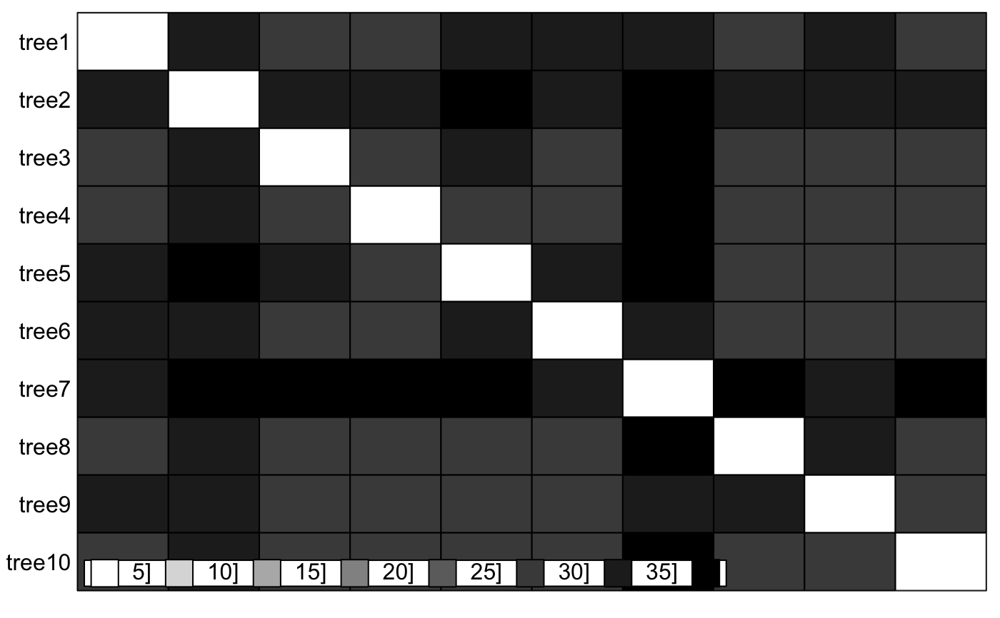
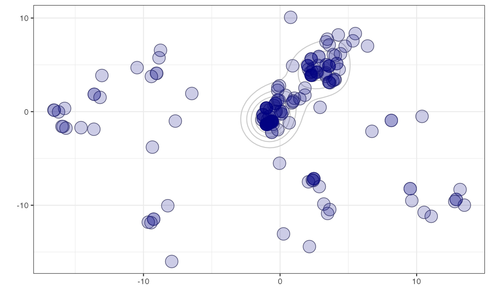
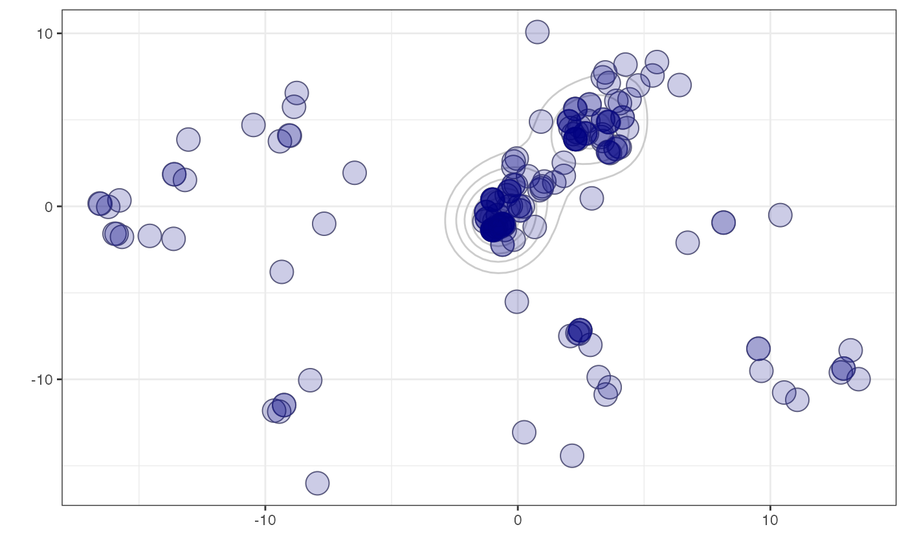

Compares phylogenetic trees using a choice of metrics / measures, and maps their pairwise distances into a small number of dimensions for easy visualisation and identification of clusters.
treespace(
x,
method = "treeVec",
nf = NULL,
lambda = 0,
return.tree.vectors = FALSE,
processors = 1,
...
)Arguments
- x
an object of the class multiPhylo
- method
the method for summarising the tree as a vector. Choose from:
treeVec(default) the Kendall Colijn metric vector (for rooted trees)BHVthe Billera, Holmes Vogtmann metric usingdist.multiPhylofrom packagedistory(for rooted trees)KFthe Kuhner Felsenstein metric (branch score distance) usingKF.distfrom packagephangorn(considers the trees unrooted)RFthe Robinson Foulds metric usingRF.distfrom packagephangorn(considers the trees unrooted)wRFthe weighted Robinson Foulds metric usingwRF.distfrom packagephangorn(considers the trees unrooted)nNodesthe Steel & Penny tip-tip path difference metric, (topological, ignoring branch lengths), usingpath.distfrom packagephangorn(considers the trees unrooted)patristicthe Steel & Penny tip-tip path difference metric, using branch lengths, callingpath.distfrom packagephangorn(considers the trees unrooted)Abouheif: performs Abouheif's test, inherited fromdistTipsinadephylo. See Pavoine et al. (2008) andadephylo.sumDD: sum of direct descendants of all nodes on the path, related to Abouheif's test, inherited fromdistTipsinadephylo.
- nf
the number of principal components to retain
- lambda
a number in [0,1] which specifies the extent to which topology (default, with lambda=0) or branch lengths (lambda=1) are emphasised in the Kendall Colijn metric.
- return.tree.vectors
if using the Kendall Colijn metric, this option will return the tree vectors as part of the output. Note that this can use a lot of memory so defaults to
FALSE.- processors
value (default 1) to be passed to mcmapply specifying the number of cores to use. Must be 1 on Windows (see
mcmapplyfor more details).- ...
further arguments to be passed to
method.
Examples
## generate list of trees
x <- rmtree(10, 20)
names(x) <- paste("tree", 1:10, sep = "")
## use treespace
res <- treespace(x, nf=3)
table.paint(as.matrix(res$D))

scatter(res$pco)
#> Error in s.label(dfxy = res$pco$li, xax = 1, yax = 2, plot = FALSE, storeData = TRUE, pos = -3): non convenient selection for dfxy (can not be converted to dataframe)
data(woodmiceTrees)
woodmiceDists <- treespace(woodmiceTrees,nf=3)
plot(woodmiceDists$pco$li[,1],woodmiceDists$pco$li[,2])
 woodmicedf <- woodmiceDists$pco$li
if(require(ggplot2)){
woodmiceplot <- ggplot(woodmicedf, aes(x=A1, y=A2)) # create plot
woodmiceplot + geom_density2d(colour="gray80") + # contour lines
geom_point(size=6, shape=1, colour="gray50") + # grey edges
geom_point(size=6, alpha=0.2, colour="navy") + # transparent blue points
xlab("") + ylab("") + theme_bw(base_family="") # remove axis labels and grey background
}
#> Loading required package: ggplot2

if (FALSE) {
if(require(rgl)){
plot3d(woodmicedf[,1], woodmicedf[,2], woodmicedf[,3], type="s", size=1.5,
col="navy", alpha=0.5, xlab="", ylab="", zlab="")
}
}
woodmicedf <- woodmiceDists$pco$li
if(require(ggplot2)){
woodmiceplot <- ggplot(woodmicedf, aes(x=A1, y=A2)) # create plot
woodmiceplot + geom_density2d(colour="gray80") + # contour lines
geom_point(size=6, shape=1, colour="gray50") + # grey edges
geom_point(size=6, alpha=0.2, colour="navy") + # transparent blue points
xlab("") + ylab("") + theme_bw(base_family="") # remove axis labels and grey background
}
#> Loading required package: ggplot2

if (FALSE) {
if(require(rgl)){
plot3d(woodmicedf[,1], woodmicedf[,2], woodmicedf[,3], type="s", size=1.5,
col="navy", alpha=0.5, xlab="", ylab="", zlab="")
}
}